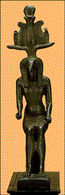
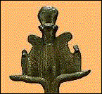

<!--This file created 10/16/97 5:56 PM by Claris Home Page version 2.0-->
<HTML>
<HEAD>
   <TITLE>Mpls Inst Arts - World Mythology: Thoth</TITLE>
   <META NAME=GENERATOR CONTENT="Claris Home Page 2.0">
   <X-SAS-WINDOW TOP=90 BOTTOM=480 LEFT=12 RIGHT=542>
<head>
</HEAD>
<BODY TEXT="#111111" LINK="#660000" ALINK="#AA0000"
VLINK="#444444" background="backgroundbrown.gif">

<P><FONT SIZE="+2">Curriculum Materials: World Mythology</FONT>
<HR>
<!--------Top Myth Menu------></center><TABLE BORDER=3 WIDTH="100%">
   <TR>
      <TD>
         <P><CENTER><A HREF="introduction.html#top">Introduction</A>
         ~ <A HREF="mythbyimage.html#top">Myth by Image</A> ~
         <A HREF="culturelist.html#top">Myth by Culture</A> ~
         <A HREF="myths.html#top">Mythological Comparisons</A> ~
         <A HREF="glossary.html#top">Glossary</A> ~
         <A HREF="suggestedreading.html#top">Suggested Readings</A> ~
         <A HREF="downloadables.html#top">Downloadable Resources</A>
         ~ <A HREF="../tta/classroom_materials_order.html">How to
         Order</A> ~ <A HREF="myth_evaluation.html#top">Your Comments
         Wanted</A> ~ <A HREF="#Story">Story</A>~
         <A HREF="#Background">Background</A> ~
         <A HREF="#Questions">Questions</A></CENTER>
      </TD></TR>
</TABLE>
<HR>
<A NAME="top"></A>&nbsp;<TABLE BORDER=0 CELLSPACING=10 WIDTH=445>
   <TR>
      <TD>
         <P><A HREF="full_jpg/02.jpg"></A><BR>
         
         <B>Image 2</B><BR>
         
         <FONT SIZE="+2">Thoth</FONT><BR>
         
         Egypt<BR>
         
         664-525 B.C. (26th Dynasty)<BR>
         
         Bronze<BR>
         
         8 inches high<BR>
         
         Gift of Lily Place 29.17.613<BR>
         
         
         <HR>
         </P>
         
         <P><CENTER><B><A NAME="Key"></A>Key Ideas</B></CENTER></P>
         
         <UL>
            <LI>In ancient Egyptian mythology, Thoth was the god of
            the moon, god of wisdom, the measurer of time, and the
            inventor of writing and numbers. He is credited with
            devising the standard 365-day year.
            
            <LI>The production of highly finished bronze votive
            statuettes increased during the 26th Dynasty, when Egypt
            enjoyed a brief period of independence.
            
            <LI>The rigid pose,
            <A HREF="glossary.html#SYMMETRY">SYMMETRY</A>, and formal
            <A HREF="glossary.html#ATTRIBUTE">ATTRIBUTES</A> of this
            statuette are typical of traditional Egyptian art.
         </UL>
         
         <P>
         <HR>
         </P>
         
         <P><CENTER><B><A NAME="Story"></A>Story</B></CENTER></P>
         
         <P>Shu (shoe), the son of the sun god, Re (ray), reigned as
         king of Egypt for many years. When his daughter Nut (newt)
         fell in love with the god Geb (gebb), Shu was wildly
         jealous. To keep the lovers far apart, he turned Nut into
         the sky and Geb into the earth. Then he cursed Nut with
         barrenness, proclaiming that there were no months of the
         year in which she could give birth.</P>
         
         <P>Thoth, the god of the moon, time, and measure, took pity
         on Nut and Geb. He challenged the reigning gods to a game of
         dice and soundly beat them all. As his prize he asked the
         gods to give him five days in addition to those that already
         existed. Thoth in turn presented the five extra days to the
         sky goddess, Nut. Because these five extra days did not
         belong to any particular month, they did not fall under
         Shu's curse. Thus, the goddess was able to use them to
         produce five children, including Osiris (oh-SIGH-rus) and
         Isis (EYE-sus).</P>
         
         <P>Prior to Thoth's gift, each of the twelve months of the
         Egyptian calendar had 30 days, resulting in a 360-day year.
         Thoth's act of kindness reconciled the Egyptian calendar
         with the earth's actual 365-day cycle.</P>
         
         <P>
         <HR>
         <A NAME="Background"></A></P>
         
         <P><CENTER><B>Background</B></CENTER></P>
         
         <P><B>Thoth</B><BR>
         
         Thoth had many roles. In addition to being the god of the
         moon, the god of wisdom, and the measurer of time, he was
         scribe, moralist, messenger, and supreme magician. The
         ancient Egyptians credited him with inventing writing. He
         was the patron god of all arts, sciences, and intellectual
         pursuits. Ancient Egyptians believed that before the dead
         could enter the Afterworld, their hearts were weighed
         against a feather of truth to determine whether they had led
         good and honest lives. In his role as scribe, Thoth recorded
         the results of each judgment.</P>
         
         <P><B>26th Dynasty</B><BR>
         
         The 26th Dynasty began in 663 B.C., when a shrewd Egyptian
         prince tricked the ruling Assyrians into leaving Egypt. By
         increasing business and trade with many neighboring
         cultures, including the Ionian Greeks, Egypt became a
         leading exporter of grain and a dominant power in the
         Mediterranean world. This brief period of independent rule
         lasted until 525 B.C., when the Persians overran Egypt.</P>
         
         <P><B>Votive Figures</B><BR>
         
         In ancient Egypt, all events, large and small, were
         attributed to the influence of the gods. Only through
         worship and offerings to these gods could humans expect to
         maintain balance in their lives. People placed small votive
         statues of gods at burial sites, inviting the gods to
         inhabit the sculptures and protect the deceased from evil.
         Other figures were used as offerings at temples. Artists
         mass-produced many bronze statuettes during the prosperous
         26th Dynasty.</P>
         
         <P><B>Thoth</B><BR>
         
         This bronze statuette depicts Thoth in a typical manner, as
         a man with the head of an ibis, a large bird of the Nile.
         Egyptians associated the ibis's long curved beak with the
         moon, so the ibis was regarded as one of Thoth's earthly
         representatives. Thoth wears a simple loincloth and a long
         wig, both decorated with rows of fine lines. The holes in
         his hands suggest that they once held objects, probably a
         reed pen, an attribute of Thoth's role as a scribe, and
         either a palette for writing on or a staff, symbolizing his
         power.</P>
         
         <P><B>Crown</B><BR>
         
         Thoth's crown is filled with symbols. (See detail.) The
         central part is the crown of Upper Egypt worn by pharaohs,
         which means he was considered earthly royalty. The feathers
         of truth on each side of the center refer to Thoth's role in
         the judgment of the dead. The solar disc at the top
         indicates his cosmic powers, the serpents with smaller discs
         on the outsides symbolize his sovereignty, and the ram horns
         at the base attest to his strength and
         virility.<BR clear=left>
         
         </P>
         
         <P><B>Style</B><BR>
         
         The style and form of this seated statuette of Thoth are
         typical of this period in Egyptian art. Following a period
         of realism, artists of the 26th Dynasty emulated the more
         stylized traditional Egyptian art. The symmetry of the
         piece, Thoth's rigid pose, and the formal attributes all
         recall the traditional style. The naturalistic curves of
         Thoth's torso, arms, and legs, however, suggest the
         influence of Greek art during this period of great trade
         between the two cultures.</P>
         
         <P>
         <HR>
         <A NAME="Questions"></A></P>
         
         <P><CENTER><B>Discussion Questions</B></CENTER></P>
         
         <P><B>Look</B><BR>
         
         <B>1.</B> <B>Tell the story of Thoth. </B>Does the sculpture
         of Thoth contain any elements of Thoth's story? <B>(No!)</B>
         The sculpture represents Thoth as a man with the head of an
         ibis. Egyptians associated the ibis's long curved beak with
         one of the things Thoth ruled. Can you guess which one?
         <B>(The moon.)</B></P>
         
         <P><B>2.</B> <A HREF="glossary.html#SYMMETRY">SYMMETRY</A>
         is a precisely balanced arrangement of forms on either side
         of an imaginary line through the center of an object.
         <A HREF="glossary.html#ASYMMETRY">ASYMMETRY</A> is an
         arrangement of forms that do not appear the same on either
         side of the imaginary center line. Is the Thoth sculpture
         symmetrical or asymmetrical? <B>(Symmetrical.)</B> Does the
         symmetry of the sculpture make it appear rigid or active?
         <B>(Rigid.)</B></P>
         
         <P><B>3.</B> An
         <A HREF="glossary.html#ATTRIBUTE">ATTRIBUTE</A> is a
         distinctive symbolic feature that identifies a character.
         Find Thoth's attributes on his crown: <B>a solar disk (top
         center of crown), serpents with smaller discs (on the far
         outsides of the crown), and ram horns (at the base of the
         crown)</B>. <B>(See detail.)</B> Where is an ibis? <B>(Head
         of an ibis takes the place of a human head on the
         sculpture.)</B></P>
         
         <P><BR clear=right>
         
         <BR>
         
         </P>
         
         <P><B>4.</B> Where has the artist used lines on this
         sculpture? <B>(On Thoth's crown, wig, and loincloth.)</B>
         Look carefully at the crown. How has the artist used incised
         lines to indicate the different areas and objects that make
         up the crown? <B>(Varied the direction of the lines.)</B>
         </P>
         
         <P><B>5.</B> How big do you think this sculpture is?
         <B>Discuss the sculpture's purpose: Egyptian people left
         small bronze figures like this one at temples or funeral
         sites to attract and please the deity represented. </B>With
         this purpose in mind, how big do you think this is?<B>
         Images can be deceiving! Show an object of similar size to
         illustrate the small size of this sculpture - eight inches
         high.</B></P>
         
         <P>
         <HR>
         <B>Think</B></P>
         
         <P><B>1.</B> This sculpture is very small because it may
         have been left at a tomb to help the spirit of the deceased
         travel to the next world, the Afterworld. What was Thoth's
         role in relation to the deceased? <B>(As scribe, he recorded
         the results of the judgment that determined whether a person
         had led a good and honest life.)</B> Why would Thoth be
         helpful to a spirit traveling to the Afterworld? <B>(Once
         Thoth recorded a judgment, the spirit could enter the
         Afterworld.)</B></P>
         
         <P><B>2.</B> In Thoth's story, Thoth gives a gif t of five
         days to the Egyptians, initiating the standard 365-day year.
         Why is a 365-day year considered standard? <B> (The earth
         travels a full rotation around the sun in 365 days.)</B>
         Which of Thoth's godly roles came into play when he
         initiated the 365-day year? <B>(Thoth the god of wisdom
         intervened on behalf of the lovers Nut and Geb; Thoth the
         measurer of time reconciled the Egyptian calendar with the
         earth's actual cycle.)</B></P>
         
         <P><B>3.</B> There are small holes in each of Thoth's hands
         that probably once held objects that are Thoth's
         <A HREF="glossary.html#ATTRIBUTE">ATTRIBUTES</A>. Consider
         Thoth's roles: god of the moon, god of wisdom, the measurer
         of time, and the inventor of writing and numbers. What do
         you think he originally held in his hands? <B>(Although we
         can't know for sure, Thoth is usually portrayed with the
         attributes of his role as inventor of writing: a reed pen
         and a writing palette.)</B></P>
         
         <P><B>4.</B> The Egyptian form of writing, hieroglyphics,
         translates as "holy writings." Egyptians considered
         hieroglyphics religious and magical. Why? <B>(Egyptian
         writing and numbers took on religious significance by
         association with Thoth.)</B></P>
         
         <P>
         <HR>
         </center>
      </TD></TR>
</TABLE> <TABLE BORDER=3 WIDTH="100%">
   <TR>
      <TD>
         <P><CENTER><A HREF="introduction.html#top">Introduction</A>
         ~ <A HREF="mythbyimage.html#top">Myth by Image</A> ~
         <A HREF="culturelist.html#top">Myth by Culture</A> ~
         <A HREF="myths.html#top">Mythological Comparisons</A> ~
         <A HREF="glossary.html#top">Glossary</A> ~
         <A HREF="suggestedreading.html#top">Suggested Readings</A> ~
         <A HREF="downloadables.html#top">Downloadable Resources</A>
         ~ <A HREF="../tta/classroom_materials_order.html">How to
         Order</A> ~ <A HREF="myth_evaluation.html#top">Your Comments
         Wanted</A> ~ <A HREF="#Story">Story</A>~
         <A HREF="#Background">Background</A> ~
         <A HREF="#Questions">Questions</A></CENTER>
      </TD></TR>
</TABLE></P>
</BODY>
</HTML>
